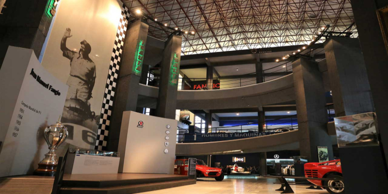

Museo Fangio
El Museo del Automovilismo Juan Manuel Fangio es un museo dedicado al piloto homónimo de automovilismo de competición. Está ubicado en el centro de la ciudad de Balcarce, Provincia de Buenos Aires, Argentina, a pocas cuadras de la casa donde, el 24 de junio de 1911, nació el que fuera quíntuple campeón de Fórmula 1, Juan Manuel Fangio.
En este museo se puede ver una gran exposición, que cuenta con más de 50 automóviles y todos los trofeos del campeón mundial de Fórmula 1.
Cuenta con audioguías en distintos idiomas para que pueda ser recorrido en su totalidad, explicando los puntos más importantes de la muestra.
